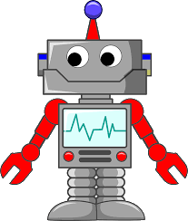

Informatique embarquée et objets connectés

Embarquer l'informatique dans les objets a beaucoup d'avantages : simplifier leur fonctionnement, leur donner plus de possibilités d'usage et de sûreté, et leur permettre d'intégrer de nouvelles possibilités à matériel constant par simple modification de leur logiciel. Après avoir transformé les chaîne de montage des automobiles et les avions dans les années 1990, l'informatique intervient maintenant dans des domaines toujours plus nombreux : automobil, réseau ferroviaire et transports urbains, domotique, robotique, loisirs, etc., conduisant à un nouvel internet des objets.[...]
Les objets informatisés avaient autrefois des interfaces homme-machine (IHM) dédiées, souvent dépendantes d'une liaison filaire directe. Mais les technologies du Web intégrées au téléphone portable permettent maintenant d'y rassembler les interfaces des objets du quotidien, ce qui en simplifie et uniformise l'usage. Les objets informatisés deviennent ainsi connectés.
Il s'agit de capter l'état du système, de le contrôler et, vis-à-vis de l'utilisateur, de lui rendre compte du système et de répondre à ses ordres.
5 parties composent le système :
- une unité de traitement
Il s'agit de coordonner l'ensemble du système et d'effectuer les calculs. Muni d'un logiciel embarqué, c'est un microcontrôleur, avec un coeur, une horloge, de la Flash, de la RAM, des périphériques d'entreées/sorties, des convertisseurs analogiques, des ports de communication. Et tout ceci peut tenir sur un carré de 4 mm de côté.
- une interface homme-machine (IHM)
On peut citer : un interrupteur, un bouton poussoir, une led (allumage/extinction, clighotement, changement de couleur), un afficheur LCD, un clavier, un écran tactile.
- des capteurs
Les capteurs peuvent porter sur différents domaines :
- la mécanique (distance, vitesse, accélération, mouvement, vibration, ...)
- l'ambiance (température, pression atmosphérique, bruit, luminosité, C02...
- l'électricité (tension, intensité...)
- l'optique (caméra, couleur, UV, InfraRouge...)
- la santé (rythme cardiaque, poids, pression artérielle, taux d'oxygène dans le sang...)
- l'eau (niveau, pression, débit, pH, turbidité, concentration en nitrate...)
- position GPS, empreinte digitale, champ magnétique...
Ils peuvent effectuer des mesures directes ou donner des mesures indirectes (exemple : via un accéléromètre, on comptabilise le nombre de pas d'une personne, ou autre exemple, la mesure du couple d'un moteur).
- des actionneurs
Il s'agit de dispositifs qui agissent sur le système : haut-parleur, électro-aimant, moteur, ampoule (à led), ...
- une source d'énergie
Dans quel environnement ? Autonome ou pas ? Sans fil ? Suivant les réponses à ces questions, la source d'énergie pourra provenir d'une prise secteur avec convertisseur, ou bien de piles, de batteries.
Pour éviter les fils ou l'usage de batterie, il y a aussi l' "energy harvesting" : l'énergie pourra être d'origine éolienne, solaire, d'un mouvement (d'un coureur, d'amortisseurs de voitures,...), électromagnétique, d'une différence de température (effet seebeck).
Pour aller plus loin, on pourra regarder la conférence de David Filliat "Les robots, bientôt nos égaux ?"
On pourra aussi s'interroger sur la nécessité de lois de la robotique.